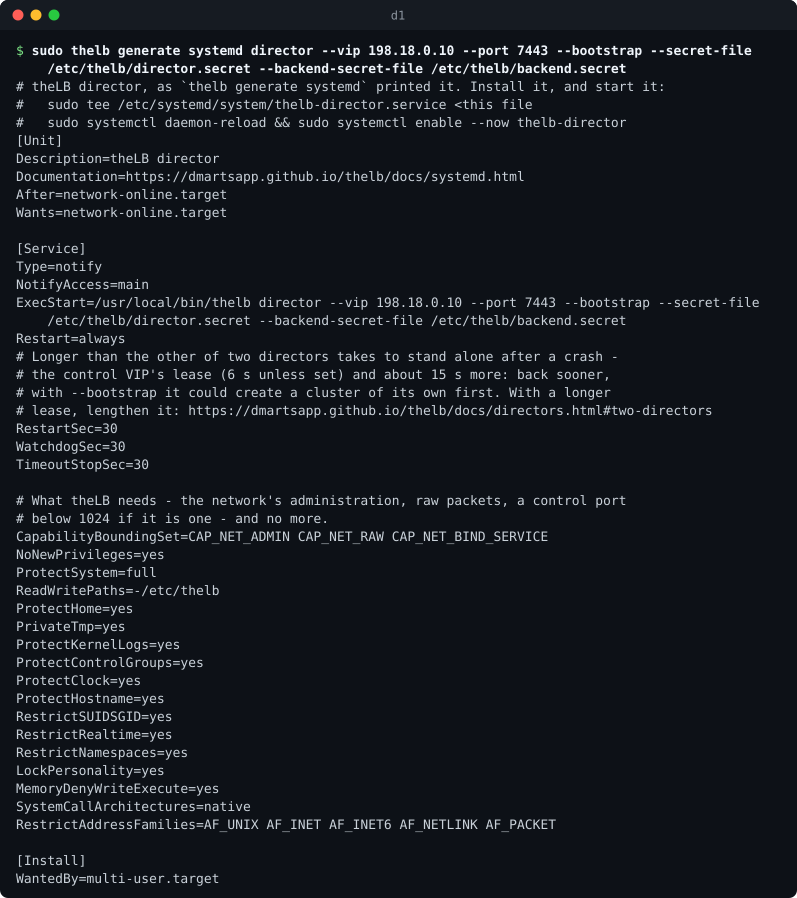

Guides
Running under systemd
theLB installs nothing by itself. It prints a systemd unit for you to install, so it starts at boot and restarts if it fails.
Print a unit, then install it#
thelb generate systemd prints a unit for a role and the flags you give it. It checks the flags the same way the role would:
sudo thelb generate systemd director --vip 10.0.0.10 --port 7443 --bootstrap \
--secret-file /etc/thelb/director.secret --backend-secret-file /etc/thelb/backend.secret \
| sudo tee /etc/systemd/system/thelb-director.service
sudo thelb generate systemd backend --join 10.0.0.10:7443 \
--secret-file /etc/thelb/backend.secret --offer web=tcp/80,check=http:/ \
| sudo tee /etc/systemd/system/thelb-backend.serviceThen start it:
sudo systemctl daemon-reload
sudo systemctl enable --now thelb-director # or thelb-backend
journalctl -u thelb-director -f # follow its logHere is a director's unit:

/usr/local/bin.As text
$ sudo thelb generate systemd director --vip 198.18.0.10 --port 7443 --bootstrap --secret-file /etc/thelb/director.secret --backend-secret-file /etc/thelb/backend.secret
# theLB director, as `thelb generate systemd` printed it. Install it, and start it:
# sudo tee /etc/systemd/system/thelb-director.service <this file
# sudo systemctl daemon-reload && sudo systemctl enable --now thelb-director
[Unit]
Description=theLB director
Documentation=https://dmartsapp.github.io/thelb/docs/systemd.html
After=network-online.target
Wants=network-online.target
[Service]
Type=notify
NotifyAccess=main
ExecStart=/usr/local/bin/thelb director --vip 198.18.0.10 --port 7443 --bootstrap --secret-file /etc/thelb/director.secret --backend-secret-file /etc/thelb/backend.secret
Restart=always
# Longer than the other of two directors takes to stand alone after a crash -
# the control VIP's lease (6 s unless set) and about 15 s more: back sooner,
# with --bootstrap it could create a cluster of its own first. With a longer
# lease, lengthen it: https://dmartsapp.github.io/thelb/docs/directors.html#two-directors
RestartSec=30
WatchdogSec=30
TimeoutStopSec=30
# What theLB needs - the network's administration, raw packets, a control port
# below 1024 if it is one - and no more.
CapabilityBoundingSet=CAP_NET_ADMIN CAP_NET_RAW CAP_NET_BIND_SERVICE
NoNewPrivileges=yes
ProtectSystem=full
ReadWritePaths=-/etc/thelb
ProtectHome=yes
PrivateTmp=yes
ProtectKernelLogs=yes
ProtectControlGroups=yes
ProtectClock=yes
ProtectHostname=yes
RestrictSUIDSGID=yes
RestrictRealtime=yes
RestrictNamespaces=yes
LockPersonality=yes
MemoryDenyWriteExecute=yes
SystemCallArchitectures=native
RestrictAddressFamilies=AF_UNIX AF_INET AF_INET6 AF_NETLINK AF_PACKET
[Install]
WantedBy=multi-user.targetWhat is in the unit#
Type=notify: theLB tells systemd when it has started.WatchdogSec=30: theLB tells systemd that it is alive - but only while its main loops keep running. If a loop stops for 30 seconds, systemd restarts theLB.Restart=always, withRestartSec=30for a director and 1 for a backend. The 30 seconds matter with two directors - see Two directors.- Hardening that does not get in theLB's way:
- its capabilities are limited to
CAP_NET_ADMIN,CAP_NET_RAWandCAP_NET_BIND_SERVICE; ProtectSystem=full, with the secret files' folder writable only with--bootstrap(the first bootstrap writes missing files);NoNewPrivileges=,ProtectHome=,PrivateTmp=and more.- It does not set
ProtectKernelTunables=, because theLB writes to/proc/sys/net.
- its capabilities are limited to
Keep files in their usual places
Keep the binary in /usr/local/bin and the secret files in /etc/thelb. A file in a home folder makes the unit use ProtectHome=read-only instead of hiding homes; a file in /tmp drops PrivateTmp= - and /tmp does not survive a reboot.
The flags are the whole setup#
There is no configuration file: the flags in the unit are the node's whole setup.
- A backend offers its
--offerflags at every start. - Offers made later with
thelb offer addare kept by the cluster, and a restarted backend takes them back. - To withdraw an offer, use
thelb offer remove <name>. Taking a flag out of the unit does not withdraw what the cluster holds.
Kernel settings and modules from boot#
theLB sets the kernel settings it needs when it starts, and puts them back when it stops. If you want them set from boot anyway, theLB prints them:
sudo thelb generate sysctl director | sudo tee /etc/sysctl.d/90-thelb-director.conf
sudo thelb generate modules director | sudo tee /etc/modules-load.d/thelb-director.confUse backend instead of director on a backend. This is optional: theLB works without them.